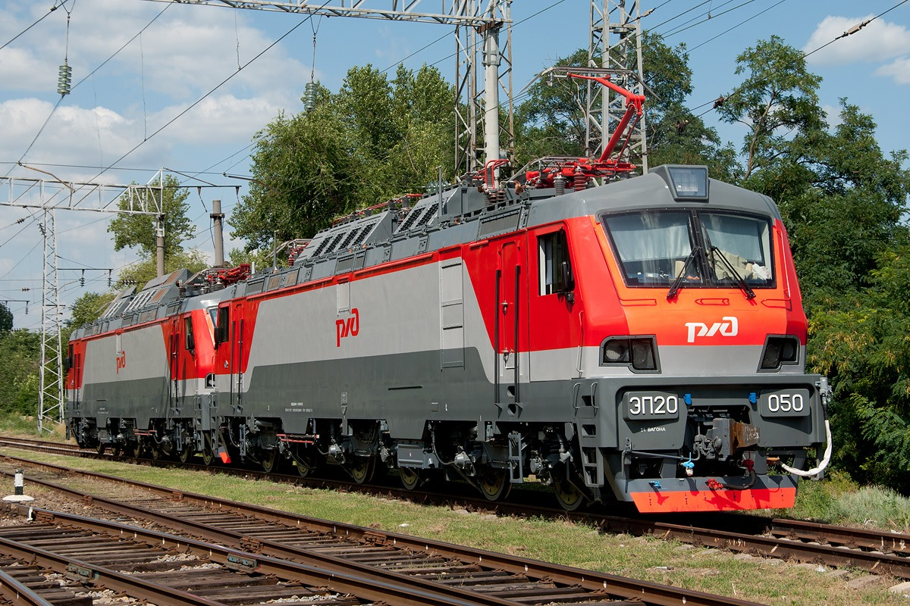
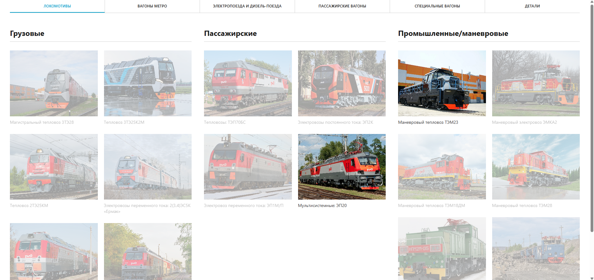
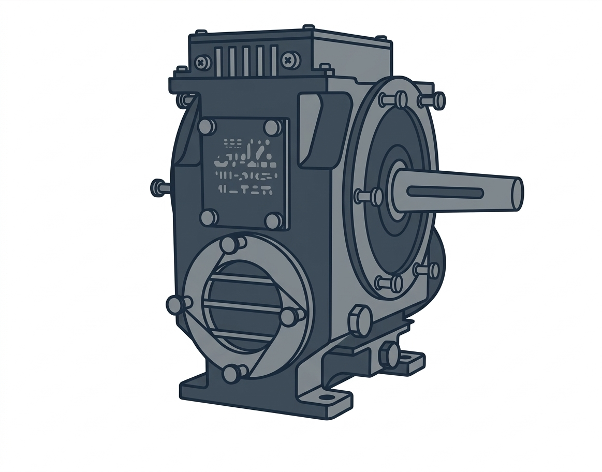

3D Конфигуратор подвижного состава
Индустриальный проект для Трансмашхолдинга (ТМХ) под руководством куратора Рычкова С.П. — интерактивная веб-платформа для просмотра, конфигурирования и анализа 3D-моделей железнодорожной техники. Каталог моделей подвижного состава: локомотивы, вагоны метро, электро- и дизель-поезда, пассажирские вагоны и детали.

Ключевые возможности
Что умеет наш конфигуратор и почему он уникален
Смена текстур в реальном времени
Поддержка текстур-паков (PBR) с переключением прямо в браузере. Металлические, roughness и normal-мапы загружаются автоматически.
Управление деталями
Интерактивный raycaster позволяет выбирать детали, скрывать/показывать их, получать всплывающие подсказки.
Каталог моделей подвижного состава
Локомотивы, пассажирские вагоны, вагоны метро, электропоезда, дизель-поезда и детали.
Проигрывание анимаций
Встроенный плеер анимаций GLTF: play/pause, seek, регулировка скорости и циклическое воспроизведение. Удобно для демонстрации работы механизмов.
Встраивание через iframe
Библиотека собирается как UMD и монтируется в изолированный iframe. Стили не конфликтуют с хост-страницей — идеально для интеграции.
Динамическое освещение
Ambient + Directional light с мягкими тенями (2048×2048). Интерактивное управление позицией через 2D-пад, слайдер высоты и пресеты. Визуальный хелпер — солнце с лучами.
Галерея проекта
Скриншоты 3D-моделей из каталога



